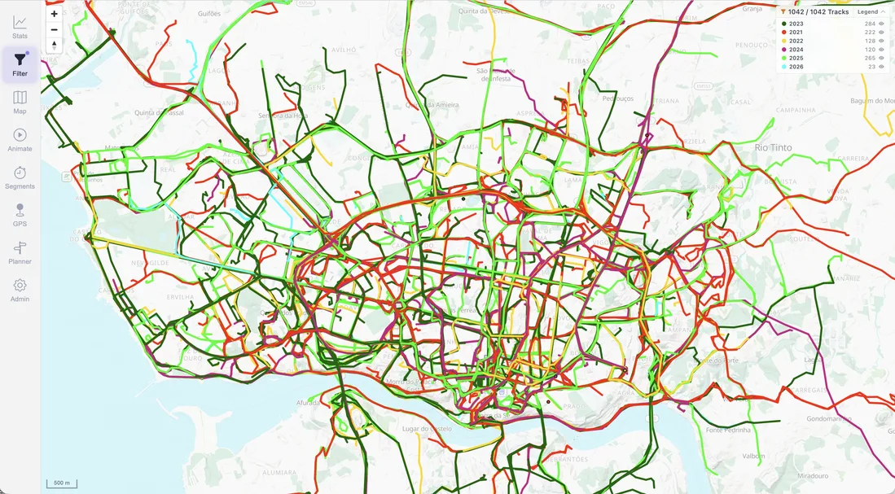

Project background.
Read the project story in the documentation.
Project story
I wanted to see thousands of personal GPS activities together, understand where I had already been, compare repeated routes, and plan what to explore next.
Patrick Heusser
Maintainer of MTL Explorer · Zurich, Switzerland

Read the project story in the documentation.